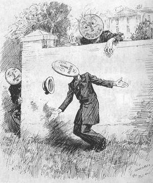
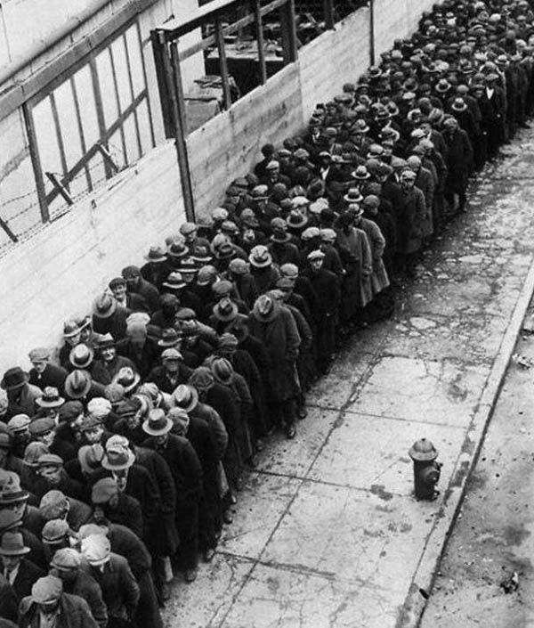
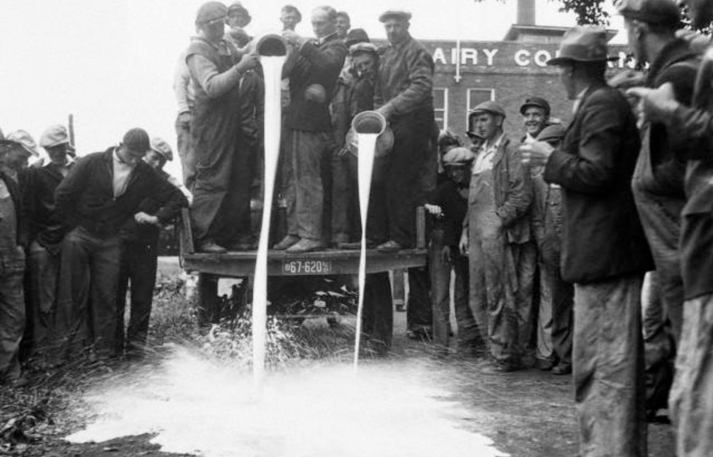
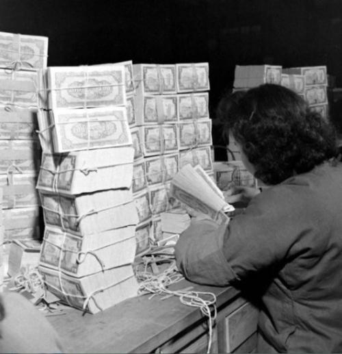
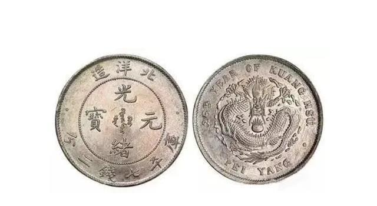

说到近代金融历史上有名的事件，1929经济大危机绝对是一个绕不开的路口。废话也不多说了直接开始吧6
一/为什么会爆发1929经济大危机
先把书上说的写了，一战结束后，随着和平的到来，世界的经济发展进入了一个繁荣期，尤其是美国。
1.不过虽然随着科技的发展和人类对大自然的开发利用，生产力不断增长，工人的工资增长却远小于生产力的增长。导致工人的购买力严重不足。而工人的购买力不足也就导致了生产的相对过剩(其实就是工人的剩余价值已经不够资本家剥削了)。
2.且世界市场也已经形成完毕，战争结束，市场的扩大速度减缓。
3.当时股票市场致富了一小撮人，低成本直接融资导致“非效率”金融以及“非效率”的经济发展，极大地催生泡沫导致股价被严重高估。过度透支了人们对企业未来的信心。且当时股票市场本身的制度存在严重缺陷，造成投机盛行，股票市场丧失投资价值和资源配置功能。出现了全国性的股票投机活动
4.人们对未来的过度透支。1920年代，美国人买第一套房子时，需要交房屋全款的33%的首付。如果买家没有足够的首付甚至一文不名，中介机构和金融机构可以提供首付的贷款，也就是说，一个美国人，可以一无所有，所有一切都靠贷款，就可以买下一套房子。随着房市股市的上涨，炒房和炒股成了人们生活的重心。房子不再是居住的工具，而是金融投机产品。
5.根本原因：资本主义的基本矛盾(生产社会化同资本主义私有制之间的矛盾)

二/1929经济大危机的表现
其实1929年10月24日的黑色星期四，美国股市股价下跌了11％。成为经济大危机的导火线。但由于华尔街救市，收盘跌幅仅为2％。接下来3天，股票还上涨了1％
10月29日，黑色星期二，股价疯狂下跌，华尔街也没有办法救市了。经济大危机爆发
在1929年的美国大萧条中，美国倒闭了14万家企业，银行倒闭了一万多家，无数人一生的积蓄瞬间化为乌尤。社会的生产与销售之间的关系几乎断开，当时整个西方社会失业的工人超过3000万，各国的失业率都飙涨，美国失业率为24.9％，大约有1500万人失业。

由于当时主张自由放任理论，政府对经济几乎没有干预，整个社会生产处于无政府状态，导致这种情况愈演愈烈。资本家为了保持利润，为了一己私利，不惜销毁商品来保持商品价格。

生产端边际收入出现问题——资本家投资意愿减弱——工人收入减少——消费需求减弱——资本家生产意愿接续减弱，就这么恶性循环下去，然后经济危机就发生了
3/影响
1.对美国
警醒了美国政府，后来加强了美国政府对国家经济进行宏观调控的能力，
美国经济缓慢地恢复过来，人民的生活得到改善。
2.对德国
使得德国魏玛共和国受到了大萧条极大的重击，其中美国对德国的援助贷款因衰退而停止供给。1932年，失业率逼近了30%，德国纳粹党和共产党得到大量支持。1933年1月，希特勒上台，建立了独裁统治，用宣传和恐怖统治德国。
1933年2月27日，纳粹党策划国会纵火案，打击了德国共产党和其他反法西斯主义力量。1934年8月2日，魏玛共和国总统兴登堡去世，希特勒任命为总统，集大权于一身。欧洲战争策源地形成。

3.对日本
加速了日本农业的结构性失衡
(”１９３１年每石大米仅为１７日元，和１９２８年的３１日元相比下降约４０％，而同时期的化肥价格只下降了１７％，每石大米的生产成本竟需要２７日元左右，越卖越亏“
”１９３２年日本农民的负债总额已经达到了６０亿日元左右。相当于同年农产品总价格的
２．７倍，平均每户负债额约为１０００日元“)
4.对中国
当时世界多数国家开始采用金本位，而中国是少数采用白银本位的国家。1929年后很多国家放弃金本位，促使本国货币贬值，而白银也就急剧升值了。导致中国白银大量外流，生活必需品涨价，农产品贬值，使得白银从农村转移到大城市。加剧了城市和农村的财富分化

5.对苏联
此时苏联正在进行五年计划，乘机接收了欧美”过剩“的资本和先进技术，迅速的实现了工业化，变成世界强国。
6.对世界
对资本主义世界造成了巨大打击，
是二战爆发的原因之一
促进了(狭义)金本制的解体,后来才会有布雷顿森林体系的形成
扩展资料：通俗地讲解一下资本主义基本矛盾？https://www.zhihu.com/question/264895929
1929年-1933年全球性经济大萧条全纪录及各国影响https://zhuanlan.zhihu.com/p/143066026
《大萧条时期的中国：市场·国家与世界经济》